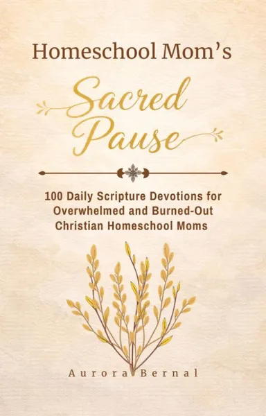
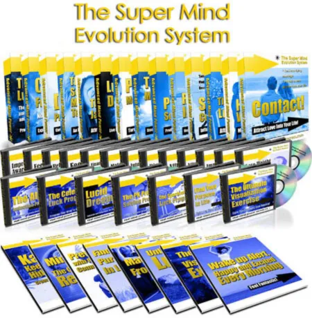
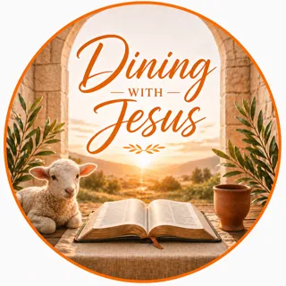
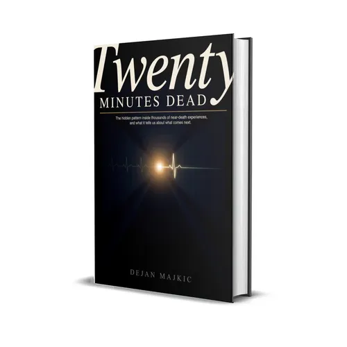

Homeschool Mom’s 100-Day Devotional - 50% Commission - High-
Product profile · Marketplace data 2026-10-14 · Sales-page research 2026-10-14 · Categories: Spirituality & Esotericism, Family & Children, Education
- Homeschool Mom’s 100-Day Devotional - 50% Commission - High- is a e-books in Spirituality & Esotericism and Family & Children sold through the Digistore24 marketplace by vendor BookCaperSelfPublishing, listed since 2026-02-18.
- List price $11.19 (single payment) — checkout, delivery and refunds are handled by Digistore24 itself, not the vendor.
- Buyer protection: the sales page advertises a money-back guarantee — confirm the exact window at checkout.
Interested in Homeschool Mom’s 100-Day Devotional - 50% Commission - High-? The current price, bonuses and guarantee terms live on the vendor's official page:
Check the official sales page
Affiliate link — we may earn a commission at no extra cost to you.

Marketplace record
| Product type | E-books |
|---|---|
| Price | $11.19 (Single payment) |
| Refund window | Per the vendor's sales page — check the official page before buying |
| Vendor | BookCaperSelfPublishing (listed since 2026-02-18) |
Vendor's marketplace description
Target a dedicated audience of homeschool educators with "Homeschool Mom’s Sacred Pause." This 100-day devotional is the perfect low-ticket offer ($10) for your Christian, parenting, or education-focused traffic. Why Promote This Book? 50% Commission: Earn a steady split on every sale. Niche Authority: Specifically designed for the unique stresses and joys of homeschooling. Easy Upsell: Perfect as a front-end offer for your email list or social media followers. We welcome all affiliates in the family, education, and faith spaces!
From the vendor's sales page
Page title: Homeschool Mom’s Sacred Pause: 100-Day Devotional - Digistore24
Opening copy
For the homeschool mom who's running on empty. when you want to quit homeschooling
The lesson plans. The sibling tension. The self-doubt. The quiet question that follows you into the kitchen every morning: "Am I enough for this?"
Rooted in God's Word Each day includes: A focused Bible verse A meaningful reflection A heartfelt prayer Perspective for your homeschool day Created specifically for Christian homeschool moms Not generic motherhood inspiration. Not classroom teaching advice. Real encouragement for the sacred work happening at your kitchen table — written by a homeschool mom of 7 years who knows exactly what it feels like to want to quit.
Prices mentioned on the page: $10 · $10.00
Guarantee language found: “60” — always confirm the current terms on the official page before relying on it.
Research method: raw HTML fetch · 883 words on page · quality: rich · researched 2026-10-14. Full research file (MD) ↗
How products like this are delivered
General note about this product type (not vendor-specific instructions): E-books on Digistore24 are delivered as a digital download (usually PDF/EPUB): right after checkout you get a download link or member-area access, and can read on any device. For the exact usage of Homeschool Mom’s 100-Day Devotional - 50% Commission - High-, the official sales page and included materials are the authoritative source.
What is Homeschool Mom’s 100-Day Devotional - 50% Commission - High-?
Homeschool Mom’s 100-Day Devotional - 50% Commission - High- is a e-books in the Spirituality & Esotericism category of the Digistore24 marketplace, published by vendor BookCaperSelfPublishing and on sale since 2026-02-18. The vendor describes it as follows: "Target a dedicated audience of homeschool educators with "Homeschool Mom’s Sacred Pause." This 100-day devotional is the perfect low-ticket offer ($10) for your Christian, parenting, or education-focused traffic. Why Promote This Book? 50% Commission: Earn a s" (vendor's marketplace description, lightly truncated).
Homeschool Mom’s 100-Day Devotional - 50% Commission - High- pricing: what you will pay
The marketplace lists Homeschool Mom’s 100-Day Devotional - 50% Commission - High- at $11.19 (single payment). Digistore24 adds any tax your country requires at checkout, where you see the final amount before paying. The sales page itself mentions: $10, $10.00 (vendor claims — the checkout total is the binding one). There is no separate marketplace-side fee; vendors may offer their own upsells after checkout.
Homeschool Mom’s 100-Day Devotional - 50% Commission - High- refund policy and money-back guarantee
The sales page advertises: "60" (vendor claim). Refunds for Digistore24 purchases are processed through the platform: request via the support link in your order email, within the vendor's guarantee window shown at checkout. Practical advice: decide inside the window — if the product underdelivers, refund it rather than letting it ride.
Details and mechanics: how Digistore24 refunds work.
Who is Homeschool Mom’s 100-Day Devotional - 50% Commission - High- for?
Based on its Spirituality & Esotericism classification and single payment pricing, Homeschool Mom’s 100-Day Devotional - 50% Commission - High- targets buyers looking for spirituality & esotericism solutions at an entry-level price. The honest test is not the category but your own situation: will you realistically use it within the refund window? If yes, the price is an investment; if not, it is clutter — regardless of quality.
Is Homeschool Mom’s 100-Day Devotional - 50% Commission - High- legit? What to verify before buying
We do not rate legitimacy — nobody can, without using the product. What you can verify, all on this page: the vendor's marketplace history (listed since 2026-02-18), the verbatim sales-page extracts below (labeled vendor claims — their marketing, not our endorsement), the guarantee terms at checkout, and the delivery method. Red flags to check on any offer: pressure countdowns paired with vague refund terms, testimonials without dates, and vendor sites that hide pricing until checkout.
How do you access Homeschool Mom’s 100-Day Devotional - 50% Commission - High- after buying?
Checkout runs on Digistore24. After payment: E-books on Digistore24 are delivered as a digital download (usually PDF/EPUB): right after checkout you get a download link or member-area access, and can read on any device. Keep your order email — it is your key to the e-books, your refund requests and Digistore24 buyer support.
Homeschool Mom’s 100-Day Devotional - 50% Commission - High- reviews: how to research it properly
Third-party "reviews" of marketplace products are mostly affiliate content — including pages like this one, which earns a commission on purchases. Treat every review (ours included) as a starting point, then verify against primary sources: the vendor's own sales page, the Digistore24 refund policy, and — for spirituality & esotericism — independent communities outside the affiliate ecosystem. On this page the sales-page extracts below are quoted verbatim, so you can judge the vendor's claims without clicking away.
How to buy Homeschool Mom’s 100-Day Devotional - 50% Commission - High- safely
- Open the official sales page and read the full offer.
- Confirm the final price and the refund window on the Digistore24 checkout page — that page is binding, not any review.
- Pay inside the Digistore24 checkout (never by bank transfer or off-platform links).
- Save the order confirmation email; note the refund deadline in your calendar.
- Evaluate promptly. Digistore24 buyer support can help if the vendor is unresponsive.
Full research archive for this product (Markdown: complete marketplace record + verbatim sales-page extracts): Homeschool Mom’s 100-Day Devotional - 50% Commission - High- — full data archive (Markdown file: 55706-homeschool-mom-s-100-day-devotional-50-commission-high.md).
- Listed price & billing — source: official Digistore24 marketplace API, snapshot 2026-10-14. The checkout page is always the binding source for the current price.
- Sales-page quotes & headline — source: https://www.checkout-ds24.com/product/669825, fetched 2026-10-14 (method: raw HTML). Verify: open the official page.
- Guarantee / refund — set by the vendor; confirm on the sales page at purchase time.
- Not verified by us: product quality, outcomes, testimonials — no hands-on test has been performed for this listing.
Frequently asked questions about Homeschool Mom’s 100-Day Devotional - 50% Commission - High-
Answers compiled from the marketplace snapshot (2026-10-14) and vendor sales-page research (2026-10-14); vendor claims are labeled inline.
What is Homeschool Mom’s 100-Day Devotional - 50% Commission - High-?
Homeschool Mom’s 100-Day Devotional - 50% Commission - High- is a e-books sold through the Digistore24 marketplace by vendor BookCaperSelfPublishing, listed since 2026-02-18. It is filed under Spirituality & Esotericism and Family & Children. Digistore24 handles checkout, delivery and refunds for this product.
How much does Homeschool Mom’s 100-Day Devotional - 50% Commission - High- cost?
The Digistore24 marketplace lists it at $11.19 (single payment). Prices are set by the vendor and can change — the marketplace record above shows the snapshot; the official sales page shows the current price.
Is there a money-back guarantee for Homeschool Mom’s 100-Day Devotional - 50% Commission - High-?
The vendor's sales page advertises: “60”. The guarantee window is set by the vendor — confirm the current terms on the official page before buying. Digistore24 handles the refund process.
Is Homeschool Mom’s 100-Day Devotional - 50% Commission - High- legit?
We don't rate legitimacy — we publish verifiable data instead: vendor BookCaperSelfPublishing (listed on Digistore24 since 2026-02-18), listed on the marketplace since 2026-02-18, with its complete sales-page research archived on this page (vendor claims labeled as such). Read our 6-point evaluation method and judge with the facts — or join the discussion about Homeschool Mom’s 100-Day Devotional - 50% Commission - High-.
Where can I buy Homeschool Mom’s 100-Day Devotional - 50% Commission - High- safely?
Only through the official sales page linked on this site (checkout and refunds run via Digistore24). Verify the price and guarantee there before ordering. That link is an affiliate link — buying through it supports this site at no extra cost to you.
How do I get Homeschool Mom’s 100-Day Devotional - 50% Commission - High- after paying?
Checkout runs on Digistore24: after payment you receive your access or download by email and in your Digistore24 customer account. Delivery details for this product type: E-books on Digistore24 are delivered as a digital download (usually PDF/EPUB): right after checkout you get a download link or member-area access, and can read on any device. If anything fails, Digistore24 buyer support can recover your order.
All 50 buyer questions about Spirituality & Esotericism — the full category FAQ.
Discuss Homeschool Mom’s 100-Day Devotional - 50% Commission - High- on Reddit
Community threads are where real buyers compare notes. We link to communities, not to specific posts — threads move, subreddits stay:
- r/spirituality — community discussions that often touch spirituality & esotericism.
- Search Reddit for "Homeschool Mom’s 100-Day Devotional - 50% Commission - High-" — real-time results, we don't control them.
- Top "review" mentions this year — sort by top, filter by recency yourself.
Related shopping on Amazon
Physical products and gear commonly bought alongside Homeschool Mom’s 100-Day Devotional - 50% Commission - High-:
- Shop meditation books on Amazon — top results, Amazon's ranking.
- Bestsellers in meditation books — live Amazon list, we don't curate it.
Sponsored: as an Amazon Associate, DigistorePicks earns from qualifying purchases (tag adminstore05-20). Amazon sets its own prices and commissions (typically low single digits — far below Digistore24 vendors' 30–75%). We list Amazon as a convenience for physical goods; it is not an alternative to the digital product above.
Related offers in Spirituality & Esotericism
Convert cold traffic with this powerful "lost history" wealth reprogramming system. This digital product offers a neuroscience-backed solution to eras

Maximise your income with one of the most popular subscription products on Digistore: spryfuel® Frequency Music! Turn traffic into permanent income streams with

A comprehensive personal development program centered on enhancing the power of the mind to help unlock one's full potential. The program provides access to

Earn 100% Commissions — The Frequency Shift Protocol Promote: The Frequency Shift Protocol — 7-Minute Nervous System Reset for Abundance & Breakthrough What
Homeschool Mom’s 100-Day Devotional - 50% Commission - High- is also listed in
Family & Children (120 products) · Education (246 products)
Similar price range in Spirituality & Esotericism

Dining With Jesus: Discover What the Bible Really Says About Food What if the Bible had more to say about your diet than you ever imagined?

What it is: A nonfiction book examining thousands of documented near-death experiences across cultures and centuries. It centers on the true story of a man pron
With Zen Mastery, You Get: 50% COMMISSIONS INSANELY HIGH CONVERSIONS AMAZING LEAD MAGNET (CHECK AFFILIATE PAGE) Why Does Zen Mastery Convert So Well? Zen medita
Related searches
Where to check it out
Read the vendor's full sales page (current price, guarantee terms and bonuses are listed there):
View official sales page
That link is an affiliate link — if you buy through it we earn a commission from the vendor at no extra cost to you.
Sources & further information
- Official sales page (current price, guarantee, bonuses): www.checkout-ds24.com/product/669825 (affiliate link)
- Public Digistore24 product page: checkout-ds24.com/product/669825
- Full research file (Markdown, versioned): content/products/55706-homeschool-mom-s-100-day-devotional-50-commission-high.md
- Marketplace category: Spirituality & Esotericism
How we evaluate products like Homeschool Mom’s 100-Day Devotional - 50% Commission - High-
Six checks, all on official marketplace numbers — earnings/sale ÷ cancel-rate skepticism × funnel fit. Read the full evaluation method · our research standards & labeling.
Questions, or own experience with Homeschool Mom’s 100-Day Devotional - 50% Commission - High-?
We publish hands-on reviews only after buying a product ourselves — but your experience helps other readers: start or join the discussion about Homeschool Mom’s 100-Day Devotional - 50% Commission - High- on GitHub. Found a wrong number? Report a correction — every page shows its data dates, and corrections are applied to the whole site.